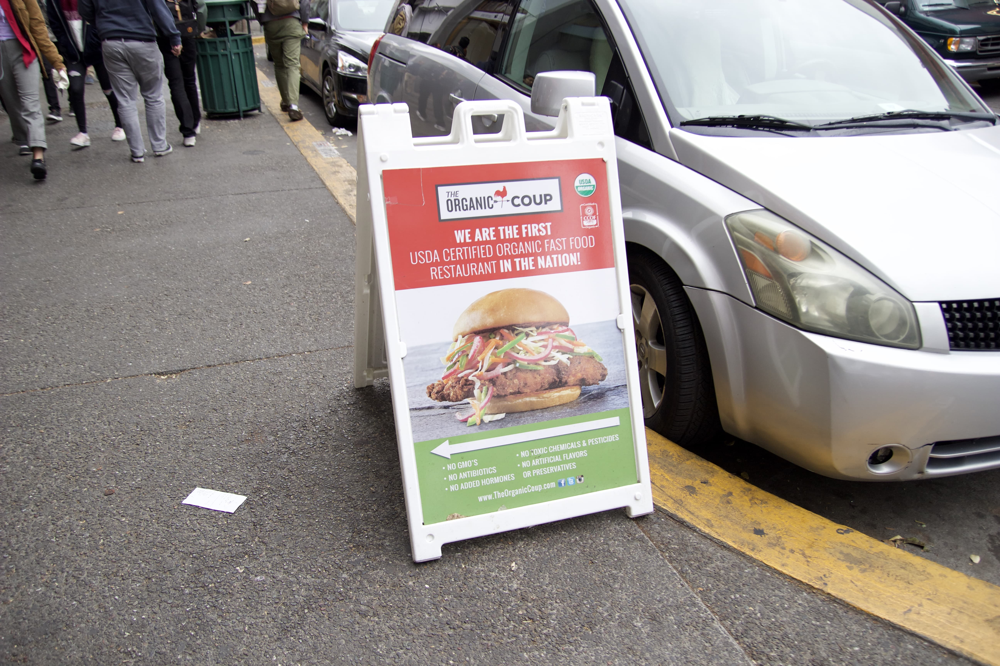
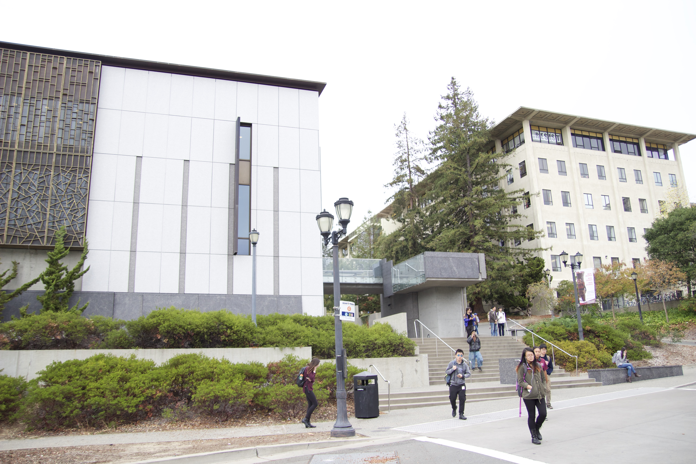
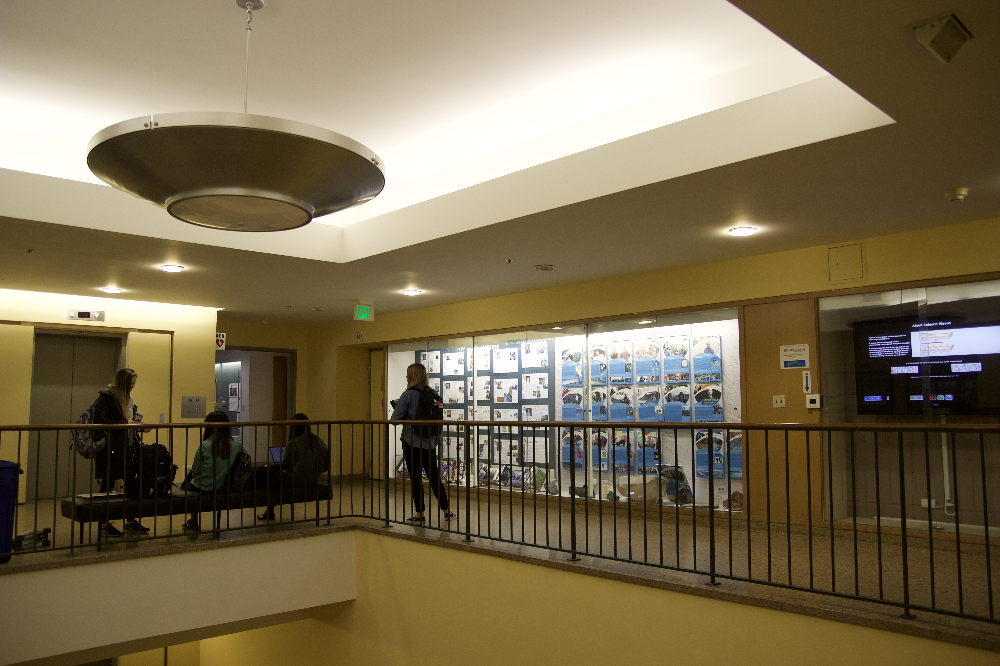
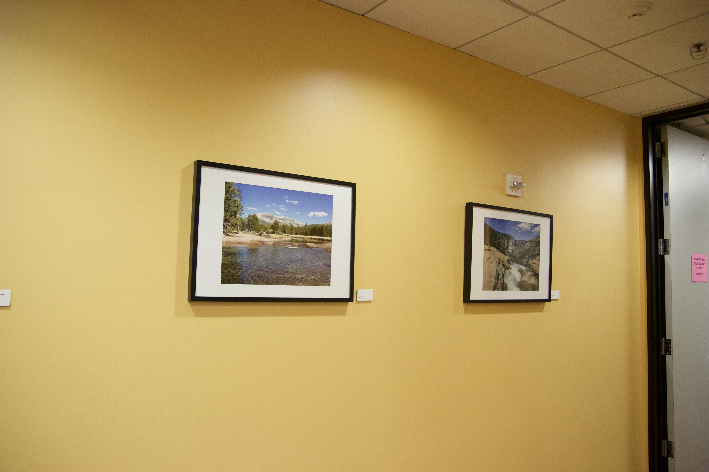

Project 6 part A, Mosaics
Rectified Images
I rectified two images so that the main rectangle-like feature on each will show flat as a rectangle. I use similiar methology to what I wrote for the mosiacs (described below)
picture in McCone Hall original
The Organic Coop A frame original picture

Picture in McCone Hall Rectified to square

Organic Coop A frame rectified to rectangle (not entirely perfect)
Methodology
Below are pictures of three Mosiacs
- East Asian Library, Berkeley
- McCone Hall, Berkeley
- Pictures in my church building, Alameda
Corresponding Points
I first plotted corresponding points between images I wanted to blend into mosiacs. For each mosiac I blended two images.
Homography
Next, with the images between each point, I computed a 3x3 homography between them. With this matrix, I can take one of my corresponding points in one image and then apply it to another
Warping
I applied the homography to one of the images using scikit's warp function.
Blending
I tried three blends- adding two images together and having one overlap another (overlap method)
- Adding half of each image in an overlap area between the two images, then adding the remaining non-intersecting parts (Linear Blending
- Masking from the middle of the intersection section to the end of one image to apply Project 3's laplacian stack blend. (Laplacian Blending)
East Asian Library
Original right-hand picture of mosaic
Original left-hand picture of mosaic

Mosiac with Overlap blend

Mosiac with Linear blend

Mosiac with Laplacian blend
McCone Hall
Original right-hand picture of mosaic
Original left-hand picture of mosaic

Mosiac with Overlap blend

Mosiac with Linear blend

Mosiac with Laplacian blend
Church Pictures
Original right-hand picture of mosaic
Original left-hand picture of mosaic

Mosiac with Overlap blend

Mosiac with Linear blend

Mosiac with Laplacian blend
Part B, find matching corners automatically
Below are the results of auto-stiching, where we find the points of interest automatically, and use those points to stitch images together. The process is divided into two parts
Find the corners: Feature detection
I used a function called get_harris_corners, given by the staff, to find all the x,y coords that might be a corner, according to the definition of a harris corner. A harris corner is a patch where if we move it, the image vector changes dramatically. In the middle of the corner is the x,y coord. I used Adaptive Non-Maximal Suppression described in the Brown paper (given in the project) to filter out a lot of the harris corner points (so we do not have to process too many points). ANMS takes every corner, finds its Fhm value (the value on the matrix given in get_harris_corners, the coord's corner strength), and assigns each corner a value r that is the shortest distance between it and another corner that is a constant stronger than it.
Match corners of two images together: Feature Matching
We do this by-
'Russian Granny' Algorithm
I take one patch p1 in one image, find the closest patch p2 in the other image based on lowest ssd. Record error as 1-NN. Then find second closest patch, call difference 2-NN. if 1-NN / 2-NN is below a certain threshold I set, then I add p1 and p2 as a pair. -
RANSAC
- Take any four pairs of points (p1, p2) randomly
- make a homography out of them, H
- find inliers using this homography, where SSD of p2 and Hp1 is less than a threshold epsilon
- Keep number of inliers, repeat
East Asian Library auto plot

Original right-hand picture of mosaic with auto-located dots

Original left-hand picture of mosaic with auto-located dots

Mosiac with Overlap blend

Mosiac with Linear blend
McCone Hall automatic

Original right-hand picture of mosaic with auto-located dots

Original left-hand picture of mosaic with auto-located dots

Mosiac with Overlap blend

Mosiac with Linear blend
Church Pictures automatic

Original right-hand picture of mosaic with auto-located dots

Original left-hand picture of mosaic

Mosiac with Overlap blend

Mosiac with Linear blend
Lessons
- Just a little difference in pixels can make the mosaic image look divided and nastly-cut. We see this in the Picture of East Asian Library. One coordinate point would hit an intersection between two lines in the picture. The corresponding point on the second image would be a few pixels off the intersection, and a few points like these make it so the top of the library does not look completely straight.
- Just naively stiching one image on top of the other does not look good, especially when the homography between the two takes one image and slants it drastically. We see this in the mosiac of McCone Hall. It looks jarring to see one rectangle of a darker color overlayed on top of a signifigantly larger slanted image.
- Gaussian/laplacian blending can only make the intersect between two images seem smoother. It is limited and cannot solve for major color differences between two images. We see this again in the McCone Hall laplacian-blended mosaic
- depending on parameters and how you define your thresholds, you can actually have less points than if you did stitching manually, manually can work better in some cases.
- The same thresholds will not work for every image, especially in east asian library where some of the features looked repeated.
- This project takes a lot of processing power and even a lot of disk space if I am not careful about filtering first. Without ANMS this program ended up taking 20 GB of disk (because there were at least 100000 harris corners detected.)
PART A
PART B
Powered by w3.css